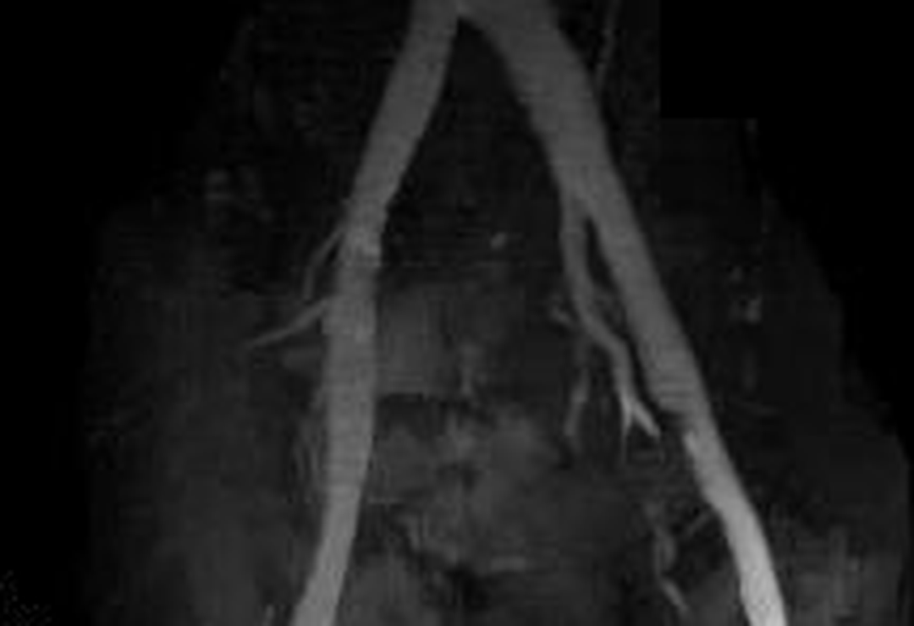
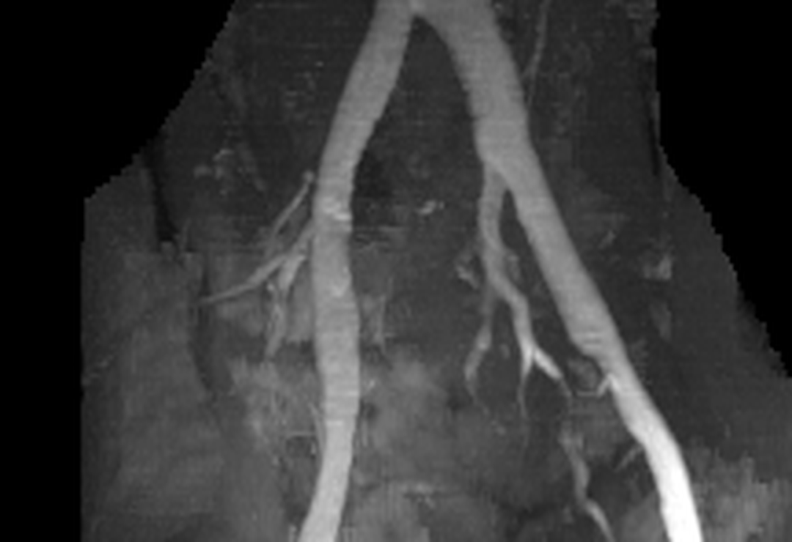

Андрій Міхальов, анамнез
Андрій Міхальов, анамнезОбстеження і знімки
Ключові знімки







Візуалізація
- МРТ з контрастом, таз (МРА таза 2010; МРТ з контрастом, на якому ґрунтується діагноз 2026 року, в архівах DICOM). запис судинного хірурга, розшифровка МР-венографія тазу, зображення, JPG, 21 KB МР-венографія тазу, зображення, JPG, 22 KB МР-венографія тазу, зображення, JPG, 11 KB МР-ангіографія тазу, 2010, ZIP, 25.6 MB, потрібен DICOM-переглядач МРТ головного мозку, МР-ангіографія голови-шиї та тазу, 2010, ZIP, 130.7 MB, потрібен DICOM-переглядач
- КТ-ангіографія 2011 (два дослідження, артеріальна фаза): вену не можна надійно оцінити; у протоколі розширені вени періпростатичного сплетення. КТ черевної порожнини, 13:14, 2011, ZIP, 88.1 MB, потрібен DICOM-переглядач КТ черевної порожнини, 14:47, 2011, ZIP, 31.4 MB, потрібен DICOM-переглядач КТ черевної порожнини з контрастом, 2011, ZIP, 120.4 MB, потрібен DICOM-переглядач
- УЗД 2010: вени лівої ноги та мошонка з доплером. УЗД 2024: рефлюкс лівої гонадної вени; мошонка та простата 2024. Допплер-УЗД вен лівої ноги та калитки, 2010, ZIP, 6.6 MB, потрібен DICOM-переглядач УЗД, урологічний комплекс при варикоцеле, 2024, PDF, 2.5 MB УЗД органів калитки, 2024, PDF, 2.1 MB УЗД передміхурової залози, 2024, PDF, 523 KB
- МРТ поперекового відділу 2011 і 2024; МРТ правого коліна 2024; КТ приносових пазух 2013, 2016, 2024; КТ голови 2016; стоматологічна КТ (CBCT) 2016. МРТ поперекового відділу, 2011, ZIP, 15.3 MB, потрібен DICOM-переглядач МРТ правого колінного суглоба, висновок, 2024, PDF, 223 KB МРТ поперекового відділу, висновок, 2024, JPG, 610 KB КТ придаткових пазух і ортопантомограма, висновок радіолога, 2024, PDF, 136 KB МРТ поперекового відділу, 2024, ZIP, 46.7 MB, потрібен DICOM-переглядач МРТ правого колінного суглоба, 2024, ZIP, 34.2 MB, потрібен DICOM-переглядач КТ придаткових пазух носа, 2013, ZIP, 289.7 MB, потрібен DICOM-переглядач КТ придаткових пазух носа, 2016, ZIP, 232.3 MB, потрібен DICOM-переглядач КТ придаткових пазух носа, 2024, ZIP, 395.1 MB, потрібен DICOM-переглядач КТ голови, 3D, 2016, ZIP, 62.3 MB, потрібен DICOM-переглядач Стоматологічна КПКТ, частина 1, 2016, ZIP, 287.7 MB, потрібен DICOM-переглядач Стоматологічна КПКТ, частина 2, 2016, ZIP, 283.9 MB, потрібен DICOM-переглядач


Лабораторні та інші
- Аналізи 2024 (Odrex) і 2011 (ЕКГ, кров, сеча). ПСА 5,11 нг/мл 2024. Результати лабораторних досліджень, 2024, PDF, 107 KB Результати лабораторних досліджень, 2024, PDF, 137 KB Результати лабораторних досліджень, 2024, PDF, 112 KB Результати лабораторних досліджень, 2024, PDF, 174 KB ЕКГ, 2011, PDF, 5.1 MB ЕКГ, аналізи крові й сечі, невролог, рентген (скан), PDF, 1.0 MB
Усе це в розділі Документи, архіви DICOM у форматі ZIP.
← Назад